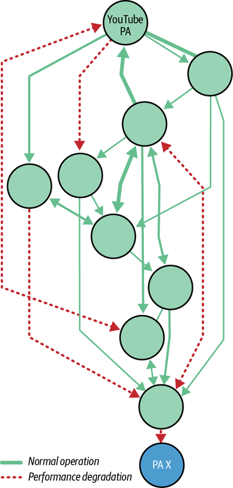
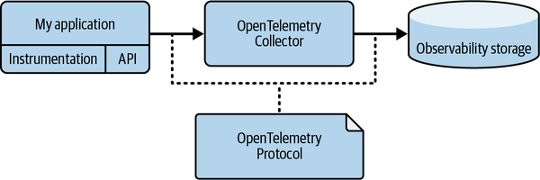
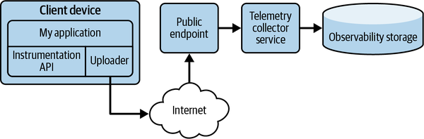
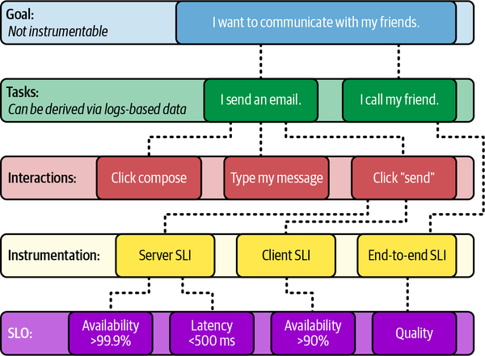
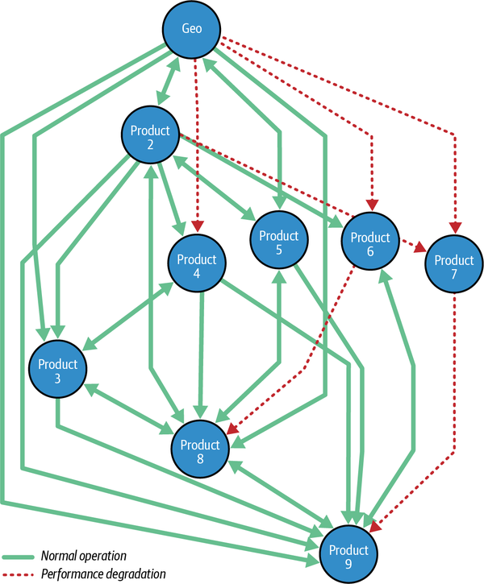
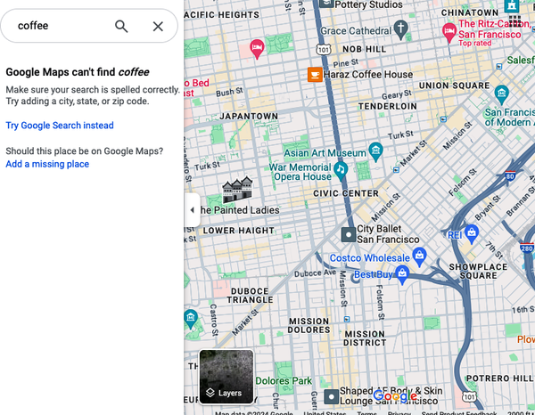
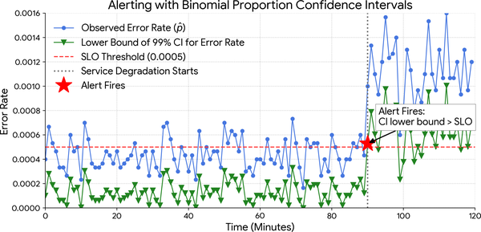

Monitoring has undergone a significant transformation in recent years. Historically, the primary objective was to meticulously collect and store state data from various components within distributed systems. These components included a wide array of elements such as client applications, frontend interfaces, backend services, storage solutions, data pipelines, hardware infrastructure, and other interconnected systems.
The practice of troubleshooting production issues with traditional monitoring data was overly dependent on:
Crucial insights and operational nuances were communicated primarily through direct interaction, often from experienced on-call engineers to their more junior counterparts. This method, while valuable for direct mentorship, was inherently inefficient for scaling knowledge across larger teams and posed a risk of knowledge loss if key personnel departed.
When an incident occurred, engineers would manually sift through disparate data points to identify potential correlations and formulate hypotheses about the underlying issues that led to it. This process was time-consuming, cognitively demanding, prone to mistakes, and limited by the sheer volume of data.
Following hypothesis generation, a further manual step was required to identify and dismiss irrelevant information or “red herrings” that could misleadingly support incorrect hypotheses. This critical filtering process also relied heavily on individual expertise and could prolong investigation times.
The ultimate resolution of an incident often emerged from a laborious, iterative process of manual data analysis, hypothesis testing, and refinement that took considerable time.
Underpinning these challenges was a limited set of telemetry signals that provided only part of the picture. The emphasis of this telemetry-focused monitoring was on time-series data, which involved capturing and analyzing metrics over time to observe trends, identify anomalies, and understand system behavior. While time-series data formed the cornerstone, other crucial forms of telemetry remained isolated and disconnected.
The “four golden signals” of monitoring—latency, traffic, errors, and saturation—are a starting point for investigating production outages. However, while these signals provide a crucial initial dataset, the ultimate insights derived from their interplay and integration with other data across the entire technology stack are paramount. For instance, high latency on a particular system that subsequently causes errors for customers or a downstream system offers valuable information. This data point must be evaluated within the broader context of all available signals across the stack. This comprehensive analysis is essential to pinpoint what factors triggered the problem, determining whether it originated from an upstream dependency, a downstream component, product misuse, or a myriad of other potential scenarios. The true power lies not in the individual signals but in their holistic interpretation to build a complete picture of system health and identify actionable solutions.
In recent years, both Google and the broader technology industry have undergone a significant paradigm shift, transitioning from this traditional monitoring approach to a more advanced concept known as observability. Structured Events are a great example of this. Observability fundamentally changes how we interact with and understand complex systems. Its core focus is on extracting valuable insights from an exhaustive array of data sources. These sources now encompass:
Metrics collected over time, providing a quantitative view of system behavior (e.g., CPU utilization, request latency).
Detailed, timestamped records of events1 occurring within a system, offering granular context. This includes wide structured events, which at Google are captured through event logging.
End-to-end representations of requests as they traverse distributed systems, illustrating the flow of execution and potential bottlenecks.
Real-time analysis of code execution to identify performance bottlenecks and resource consumption patterns.
This rich tapestry of data is typically collected through software instrumentation, facilitated by modern frameworks and standards such as OpenTelemetry and eBPF (see “Ingestion Evolution”). The key advantage of observability, powered by consistent and comprehensive instrumentation, is its ability to minimize the amount of prior knowledge and deep system understanding required to effectively diagnose and resolve outages. By providing a comprehensive, contextualized view of system internals, it enables engineers to quickly filter through many potential outage hypotheses and reach an accurate conclusion more quickly.
Furthermore, the field of observability has continued to evolve beyond merely gathering raw insights. There’s a growing emphasis on transforming these insights into complex conclusions, driven by more sophisticated data processing and analytical techniques. This evolution has leveraged:
Common views of production topologies with canonical sets of production assets that capture service compositions, dependencies and ownership models (Figure 9-1).
Centralized repositories for vast amounts of raw data, allowing for more flexible and powerful analytical queries across diverse assets and datasets.
Tools to automate and enhance incident investigation (see “From Investigation to Automatic Mitigation”), including statistical frameworks like Bayesian models for probabilistic inference and the exploration of large language models (LLMs) for understanding complex observability data, identifying patterns, and suggesting remediation strategies.

Asset taxonomies provide the organizing principles for the knowledge graph. A taxonomy creates a classification hierarchy, allowing you to organize system assets (such as systems, databases, or data pipelines) into broader and narrower categories. For example, a static content server can be classified as a subcategory of a broader “infrastructure systems” category.
A knowledge graph is often built on top of a data lake to provide structure and meaning to what is otherwise raw, undifferentiated data. The knowledge graph acts as a logical layer or a “smart index” over the vast datasets stored in the lake, without being tied to a specific physical storage model.
For observability, the transformation we’ve been describing is powerful because the raw, high-volume data (such as logs, time series, and traces) can reside in the data lake, while the knowledge graph provides the curated, comprehensive view needed to navigate it efficiently. An investigator can use the graph’s clear representation of services and pipelines to quickly derive insights such as where the problem started from and which products are being affected without domain expertise on the intermediary services, dramatically speeding up analysis.
This continuous evolution aims to further automate the process of incident response while making it more intelligent, moving beyond human-intensive analysis to more proactive and predictive capabilities, ultimately leading to more resilient and efficient systems. At the same time, the usage of data lakes, knowledge graphs, and asset taxonomies enables AI2 to potentially use those datasets to extend trained models using Model Context Protocol (MCP) interfaces and/or retrieval-augmented generation (RAG).3
The evolution of monitoring has led to a shift from service-focused observability to product-focused observability, with an emphasis on understanding signals that directly impact customers. Understanding how customers interact with the product is more important than knowing the exact “nines” of individual service availability (see “Customer-Centric Monitoring”).
Observability, as a discipline, is an ongoing journey of improvement within the realms of systems monitoring and incident response. This progress is often characterized by new trends and iterations, frequently branded as “Observability 2.0” and subsequent versions, signifying advances in techniques and philosophies.
A critical objective behind these advancements is to provide more effective and sophisticated support for engineers who are on-call. The primary goal in an outage context is to significantly reduce time to mitigation (TTM) by enhancing their ability to understand and diagnose system behavior. This metric, crucial in incident management, represents the duration from the customer-centric detection of an issue (see “Customer-Centric Monitoring”) to its containment or resolution. A secondary goal is to reduce time to detect (TTD) for incidents, sometimes even preventing customer impact beyond SLAs.
Consequently, a reduction in TTM directly leads to a reduction in time to resolve (TTR). The ultimate benefit of this accelerated resolution is a return to normal operation, where capacity, release cycles, and system health are as expected. In essence, the evolution of observability empowers engineers to ensure business continuity and maintain a high level of customer satisfaction even in the face of system disruptions.
One of the key aspects of running a successful SRE practice is the ability to deeply understand how your system works. Reviewing design documents and talking with product development teams is an important part of that at the start, but once the system is running in production, you need something more to identify potential and actual issues. This is where modern observability comes in. These days, observability shouldn’t just tell you if something is broken but also how and why it broke. Modern observability platforms can even be used to predict when the system might break.
This need has become more acute as systems have evolved. In the past, systems were simpler, often consisting of a few large, monolithic components. Setting up monitoring for them involved a fair amount of manual work. For example, you would manually configure a system like Prometheus, specifying which servers to scrape for time series. Then you would manually create dashboards for each component: perhaps one for the database, another for the middleware, and possibly a third for client-side behavior.
Modern systems are frequently far more complex, and architectures based on microservices are now common. Microservices offer many advantages, such as decoupled releases, better isolation of concerns, and more straightforward capacity management. However, these systems present a challenge from an observability perspective. Manually configuring dashboards and alerts for hundreds or thousands of services becomes impossibly difficult. As the number of components involved in every request grows, tracing is becoming increasingly valuable. The ability to follow a request through your workloads can help you understand data flow through the system and pinpoint latency bottlenecks and other issues.
To manage this complexity, we’ve found that an effective strategy combines three key areas:
Out-of-the-box dashboards
Intelligent alerting
Automatic mitigation
Let’s explore how we use these strategies at Google to equip teams with the data they need to fully know their systems.
In the days of monoliths, dashboards were king, but their creation and maintenance were a source of toil. In the world of microservices, this toil is prohibitive. To solve this problem, we built a system that automates much of the process of creating dashboards.
Services are automatically discovered by our internal monitoring system, Monarch. Because microservices frequently reuse the same libraries (e.g., for RPCs, storage, or authentication), common time series are automatically retained in a way that is consistent across all components. We created dynamic dashboard templates that allow SREs to see various aspects of their services (e.g., an RPC dashboard or a memory usage dashboard) and built a system that automatically discovers which dashboards apply to which services. This dynamism allows dashboards to present a view tailored to the specific context and state of the system the user is exploring. The view allows an SRE to select a service they care about and browse through an automatically generated set of dashboards, all of which are potentially useful. This approach is a key evolution from our earlier thinking, where we emphasized the importance of manually curating a handful of key dashboards for a service.
This approach also reduces dashboard duplication and makes it easier to mitigate complex outages. When teams need to collaborate to resolve an outage, they can look at each other’s systems knowing that the data they see will be consistent. This shared understanding avoids situations where client-side and server-side numbers don’t seem to match simply because manually created dashboards use different conventions for how to format the data. Furthermore, maintainers of common libraries can provide dashboards related to those libraries, ensuring that the SREs running services always have access to the best observability data their library exports.
As our observability practices matured, we noticed that the most difficult outages often required breaking down time series along dimensions with extremely high cardinality (i.e., a very large number of unique values—millions to trillions, or even unbounded), for example by username or IP address. This scenario pushed us against the inherent limitations of our monitoring stack. On one hand, our metrics platforms, like Prometheus and Monarch, excel at structured, low-cardinality data but, as we’ll discuss, struggle with the immense volume of high-cardinality time series. On the other hand, our logging systems can capture this level of cardinality but are slower and more costly for the kind of ad hoc analysis needed during an incident. This kind of high-cardinality data is invaluable for pinpointing the precipitating factors of complex failures. The cost and performance impact of forcing it into a metrics model makes it impractical to simply retain everything. This issue remains an active and important challenge, as we explore new ways to get the best of both worlds: the deep insights of high-cardinality data without overwhelming our core systems (see “High-Availability Telemetry Versus Analytics Telemetry”).
Having common dashboards is a great start, but what about alerts? The same challenge of manual configuration we saw with dashboards applies here, too. In a world of microservices, configuring alerts independently for each one risks creating blind spots. This risk is especially true for cause-based alerts—for example, for quota and resource usage—which remain useful even as we favor alerts based on SLOs. What if we forget to set up an alert when one microservice is running out of quota?
Let’s imagine an example where we have a set of microservices and we want to be alerted when they serve too many RPC errors. We could set a static threshold—say, 0.05% errors—for all services. That threshold is an easy solution, but a blunt one; it doesn’t account for the fact that some services have low traffic while others serve thousands of queries per second. With a static threshold, we risk waking an on-caller for a low-volume service when only a few queries fail, while being too permissive for a high-volume service where even a low error rate can affect many users.
This example is why we’ve developed systems that use either statistics or machine learning to establish a baseline of a system’s behavior and alert when we observe a deviation from it (see Appendix G). Such a solution is more robust and strikes a good balance between a one-size-fits-all approach and creating tailored alerts for each aspect of each system. It moves beyond the simple “alert on symptoms” mantra of the previous edition of this book by adding a layer of intelligence to determine when a symptom is critical, thus significantly reducing alert fatigue. Alerts that we have configured universally for all services at Google now account for almost a fifth of all alerts our SREs handle. This automation frees engineers to focus on what they do best: setting up alerts for unique, complex cases and the novel behaviors of new systems. Meanwhile, the automated observability of common problems has become a standard, essential part of our toolkit.
While company-wide horizontal alerts are powerful, we found that this same need exists at a more granular level. Not every service uses a Tensor Processing Unit (TPU), but for those that do, a common set of alerts for TPU health is critical. Similarly, many services might rely on a shared authentication library or display map tiles. This insight led us to develop systems for creating horizontal alerts that apply to a specific subset of an organization. This setup allows teams that maintain these common components—be they hardware or software—to provide expert-level alerting to all of their users automatically, ensuring consistent and comprehensive monitoring for any service that opts into that ecosystem. While the idea of reusable alert templates has historical precedent (teams developed reusable alert libraries two decades ago), the approach has evolved from an occasional improvement into a standard, centralized, organization-wide strategy.
Deriving meaningful conclusions before issues become major problems is a cornerstone of modern observability. AI models can be trained on historical data to learn normal behavior. When new data deviates significantly from this learned behavior—even in subtle ways—it’s flagged as an anomaly. This action helps reduce alert noise and enables dynamic thresholds that adjust automatically. Predictive monitoring takes using historical data a step further by using AI to forecast future system behavior (like resource needs or potential failures), which allows teams to proactively address problems before they occur.
In the past, when an alert fired, an SRE could read through a handful of dashboards to understand what was going on. In a modern microservice architecture, however, an outage might involve dozens of components failing in complex, interrelated ways, making that manual approach much more expensive. Our research shows that SREs follow common investigation patterns and frequently check similar symptoms: this approach has not changed, but the scale has increased dramatically. To manage this increased complexity, we now automate the process of checking for common symptoms when an alert fires.
Instead of giving SREs generic dashboards to read through, we are now beginning to create dashboards in response to an alert. These dashboards contain summaries of the most common symptoms checked during an outage investigation. Automating these checks, especially if they are performed across hundreds of dependent microservices, leads to noticeable savings in TTM. Instead of starting from an empty page and a playbook, SREs begin with a list of issues we have identified automatically, which gives them a significant head start. If possible, we take that a step further and suggest mitigations that SREs can apply quickly, creating a customized, auto-generated playbook—one that didn’t exist before the alert was fired in that specific context.
Creating dashboards in response to an alert is a direct application of the SRE principle of eliminating toil, which aims to systematically reduce the burden of repetitive operational work. We can even take it a step further and automate generic mitigations: preplanned responses that address a wide range of problems without needing to know the specific ones currently at play. While these actions have been a part of the SRE toolkit for a while, the confidence we have in modern monitoring approaches now allows us to automate them.
If the system detects a statistically significant increase in errors or latency following a new release, it can automatically roll it back. If a service is under heavy load, it can automatically be scaled up. If a cluster shows signs of failure, traffic can be automatically drained away from it.
We can enhance this automation further by predicting issues and applying mitigations before they impact users, leading us toward self-healing systems where agents take action to maintain system health instead of restoring it. For example, such an approach could be used to request minor increases in quota in response to an influx of users and an anticipated shortage of resources. This setup frees engineers from the toil of constantly reacting to known issues and allows them to focus on improving the system’s architecture and more fundamental aspects of reliability.
Leveraging proactive insights, dynamic data exploration, and intelligent automation helps SREs gain deep visibility into system health and behavior. This combined approach allows us to evaluate if the system works the way we think it does. If it doesn’t, how is it different, and what should we do about it? This evaluation enables immediate, informed action that ultimately leads to more stable and reliable services.
Analytics telemetry, which allows for a tolerable delay (seconds to minutes) in data processing, is the foundation for observability analytics—the practice of using comprehensive insights and complex analyses to deliver key observability outcomes, such as a better understanding of how systems are working or failing. In contrast, high-availability telemetry focuses on immediate responses to critical events. Both types of telemetry are critical to a system’s lifecycle and response strategy.
The focus of high-availability telemetry is to enable the immediate detection of and response to operational issues by delivering data with minimal delay. This immediacy is critical for maintaining system stability and reliability, as it directly triggers instantaneous alerts and provides the up-to-the-second insights needed for rapid incident mitigation. The primary goal is to facilitate swift, decisive action, making it the backbone of any effective, time-critical operational strategy.
Common use cases for high-availability telemetry include:
Controlling systems that require immediate feedback to make high-availability adjustments, such as traffic management, load balancing, and network control
Triggering alerts when critical metrics exceed predefined thresholds to enable rapid response
Identifying and mitigating failures as they happen
Detecting and responding to security threats in real time to minimize potential damage
Using synthetic monitoring to get high-availability feedback on the health of a service by simulating user behavior
Providing low-latency data and alerts that enable rapid mitigation and minimize the impact and duration of the event
The requirements for high-availability telemetry focus on speed and immediate action:
Data must be captured and processed with minimal delay, typically subsecond to a few seconds. This is critical for enabling rapid feedback and reactive control of systems.
The system needs to handle a large volume of data continuously and efficiently to keep up with the high-availability flow.
The data pipeline must be highly reliable to ensure that critical alerts and control signals are not missed.
The processing should be lightweight and focused on immediate metrics and thresholds to enable a rapid response to issues.
Ingesting, storing, and querying high-cardinality time series is crucial for low latency and reliability in high-availability systems that aren’t built for metrics with unbounded cardinality, such as systems tied to individual users or requests.
Analytics telemetry can tolerate greater delays in data processing, typically ranging from seconds to minutes, or even longer in some cases. This delay is acceptable because this form of telemetry focuses on providing comprehensive insights and supporting complex analyses that inform long-term strategy and incident investigation. This approach allows for more complex computations and data aggregation, with an emphasis on understanding system behavior rather than immediate reaction.
Common use cases for analytics telemetry include:
Identifying long-term trends and patterns to predict potential future problems
Pinpointing system bottlenecks and areas for improvement over time
Forecasting future resource needs based on historical data and trends
Investigating past incidents by examining detailed, aggregated data to understand the underlying causes
Analyzing historical data to detect potential security breaches or suspicious activity that may not have been caught in real time
Analyzing business time series to understand performance, identify opportunities, and make data-driven decisions
The requirements for analytics telemetry prioritize comprehensive analysis over immediate response:
The system needs to be able to aggregate and store large volumes of historical data for long-term analysis. This requirement supports tasks like trend analysis and capacity planning.
The system must feature a flexible data model and query language to enable a wide spectrum of analyses on high-cardinality data, from security audits to performance tuning, including complex computations such as applying machine learning models.
The system must be scalable to handle increasing data volumes over time as more data is collected for historical analysis.
Low cost is critical, primarily to support the immense volume of data generated by high-cardinality metrics and the desire to store it for longer periods to facilitate historical context and in-depth understanding.
For accurate insights and comprehensive offline analysis, ensuring data completeness (the ability to retrieve the entire dataset from the system) often takes precedence over achieving low latency.
Analyzing complex failures often requires breaking down telemetry by dimensions with very “high cardinality” (for example: by customer ID, application version, or session IDs).
The different requirements of high-availability and analytics telemetry outlined in the previous sections necessitate different design considerations when evaluating your monitoring systems as a whole.
The high-availability monitoring stack should minimize dependencies as much as possible. For example, every service at Google has a dependency on monitoring. In turn, monitoring systems should avoid depending on these same underlying services as much as possible. Otherwise, when a production service has issues, monitoring is likely to be down at the same time. The open source solution Prometheus and Google’s internal system Monarch are examples of systems designed for high-availability monitoring.
High-availability monitoring systems should prioritize the most recent data over older data. The most important question is whether the monitored services are running fine now. By prioritizing the freshest data, these systems avoid building a first-in, first-out (FIFO) model for ingested data points. Instead, they can start serving right away with the freshest data. If the monitoring system goes down, designing the system in this way ensures that you can get back online with the most critical data almost instantly.
When compromises need to be made, relax the completeness guarantee over high availability. In contrast to traditional database systems, even partial data is super important to help a system operator deal with an emergency.
For optimal high-availability telemetry with minimal I/O latency, consider memory, SSDs, or tiered memory architectures with low-latency capabilities. Alerting query latency can be further improved by aggressively utilizing indexing, hedged reads, and materialized views.
Analytics telemetry use cases have different trade-offs. Systems built for this purpose often leverage technologies designed for large-scale data warehousing and analysis. For example, within Google Cloud, services like BigQuery are used to analyze large volumes of log data.
To achieve an acceptably low cost, analytics telemetry storage is typically built on top of cheap storage systems on disk. Downsampling is often aggressively applied to the time-series data to address cost constraints.
Analytics telemetry use cases usually involve more time-series data and longer data durations, so the processing system needs to be designed to handle data at scale. For example, the data processing engine needs advanced query optimization and planning to improve the scalability of the queries.
While high-availability and analytics telemetry have different requirements, the users of these systems should not need to store, configure, and query them differently. An interface that interacts with both systems and provides a unified experience for users is recommended.
For example, users should need to integrate only a single client library into their monitored applications, and the library should use the same interface to ingest time-series data into these systems. They should be able to configure data retention parameters, alerts, and other settings coherently through the same framework and UI. Users should also need to interact with only a single query endpoint and language for processing their data. The query endpoint should be able to route queries to the corresponding storage systems based on time series characteristics, retention policies, and other metadata.
Despite their different backend systems and storage strategies, providing a single client ingestion library, a cohesive configuration framework, and a unified query endpoint allows users to interact seamlessly with both types of telemetry. This approach ensures that users can access both the freshest data for immediate insights and the complete historical record for in-depth analysis without needing to manage or toggle between two separate systems.
Observability tooling is a key consideration for any production service, and decisions made have organization-wide implications. This section focuses on a key aspect of that tooling: generating and ingesting observability signals. The capabilities in this area have evolved steadily over the last decade.
In Google’s largest products (e.g., Google Search, YouTube, Google Cloud) we enforce a level of standardization on observability tooling, due to the normal hierarchical structure of any big organization, the economies of scale it enables, and the lower cognitive load it ensures. We also have several product SRE teams, such as Waze SRE, that work fairly independently and make decisions about their own observability solutions and tooling.4
In our work with Google Cloud customers, we are exposed to many different points of view and requirements when implementing observability. Some customers are looking for fully managed solutions that solve specific pain points, while others look for more generic, flexible, and affordable platforms.
These observations have taught us that although advancements in observability products have been rapid, organizations typically cannot afford the constant changes needed to adapt to every new trend. Each change brings the risk of breaking critical monitoring, not to mention the cost of migrating code and reeducating the team. When evaluating a new observability product, some important questions to ask are:
How well supported is the product? If it is an open source library, does its community have a strong record of maintenance (i.e., fixing bugs, answering questions)? If it is a proprietary SaaS product, is there a strong commitment from providers and an engaged user base?
Does the product conform to industry standards? Is it endorsed by an industry group, such as the Cloud Native Computing Foundation (CNCF)?
Can it be used consistently by all platforms in the company (e.g., backend, mobile, and web)?
What would happen if the new product were not adopted?
In the long run, migrations to new observability products pay off, but the effort and associated risks must be considered carefully.
Based on those questions, a common pattern we’ve seen is requests to implement solutions that follow open standards, use open source software as much as possible, and focus on specific, well-established technologies (e.g., Prometheus). Why? Not only are these technologies widely adopted, but using open systems also provides distinct benefits. The hope is—and this is generally the case—that by adopting open source software built on open standards, users will avoid having to change observability agents (not to be confused with AI agents!) again, in the future. Instead, they can point their existing agent to a backend of their choosing.
The next section discusses one such open standard and the benefits it provides.
Many observability systems start in one of two ways: by collecting logs and trying to glean as much value from them as possible, or by undertaking dedicated instrumentation efforts to create and collect time series. Google’s own observability systems started as homegrown, monolithic efforts. We’ve learned that the cost and complexity of generating and ingesting data are among the most challenging and persistent issues in observability. We decided to take the lessons of our internal system, Census, and work with other major observability vendors and open source systems to create a new industry standard, OpenTelemetry.
OpenTelemetry (OTel) was founded with these key principles in mind:
Create a data format that is flexible enough to exchange data across observability vendors and existing proprietary solutions.
Existing signals should be able to flow through OpenTelemetry’s protocol and tooling. Anyone should be able to adapt or tweak OpenTelemetry to meet their observability needs.
Signals that were traditionally fragmented (traces, time series, logs, etc.) should be easily joined to provide new insights.
All systems need to be observable. OpenTelemetry must be able to scale up and out (or down) to support these systems.
Users can pick which components of OpenTelemetry they need; they aren’t locked in to using all of it.
Today, OpenTelemetry offers four primary components to support telemetry ingestion (Figure 9-2): the OpenTelemetry Protocol (OTLP), the OpenTelemetry Collector, the OpenTelemetry APIs, and a set of out-of-the-box instrumentation for major open source components.

OLTP supports the open exchange of data between formats. Most major observability vendors and Google Cloud support this protocol for observability data exchange. This exchange is augmented by the OpenTelemetry Collector, a component that is able to create pipelines of observability signals. The Collector acts as a Swiss Army knife for observability, allowing you to interact with existing observability signals like logfiles and Prometheus metrics and convert them into OLTP. You can even write your own conversions. These elements provide the core foundation of OpenTelemetry ingestion. These two components alone provide value in decoupling the source of signals from their destinations.
This baseline can be expanded with OpenTelemetry APIs and instrumentation components. They are designed to be included as dependencies when developing applications or, in the case of zero-code instrumentation, to augment existing binaries with correlatable signals, following known conventions. With OpenTelemetry APIs, you can develop your own application and include open observability out of the box.
But why would you use OpenTelemetry APIs and instrumentation instead of existing solutions? OpenTelemetry enables correlation of signals across contexts and provides three levels of correlation:
Understanding where signals originate in infrastructure
Tracing IDs through signals and events
Understanding where signals originate in code
Runtime correlation is provided through OpenTelemetry’s concept of a resource. All signals are required to attach to a resource (i.e., the origin of the data). As a result, all signals produced from an API or instrumentation will share a common set of resource attributes (key-value pairs) that can be used to slice and dice data based on this origin.
Causal correlation is enabled through OpenTelemetry’s context propagation. Trace IDs are attached to logs and time-series metrics, and key-value string labels can also be propagated through the concept of distributed baggage. We use baggage and context to attach labels to time series and events across contexts, like tracking CPU usage per request on an HTTP server, or understanding how an experiment impacts latency.
Source correlation, at least in today’s OpenTelemetry, is mostly done through attaching stack traces and recording the name of libraries or instrumentation code via a concept called an instrumentation scope. We still mostly leverage stack traces to drive correlation between an error and source code as quickly as possible.
Since its founding in 2008, Waze, the popular driving navigation app, has gone through many iterations of server-side telemetry systems. Early on, Waze engineers wrote an in-house telemetry library for exporting telemetry to the cloud. Later, the OpenCensus library5 made its way into the app, first through third-party libraries like gRPC, and then through Waze engineers eager to adapt it for their application code. Waze is currently shifting its time series to OpenTelemetry, which is now commonly viewed as the modern industry standard. This transition is projected to take more than a year.
Each new phase was driven by changes in scalability needs, app maturity, and the availability of new solutions in the cloud computing space. With each phase, there was excitement about the possibilities of new observability features but also inertia to remain on the old system, since telemetry migrations are tedious and risky. There were also extended periods where Waze had multiple overlapping telemetry systems in use, creating confusion for developers. A recurring question was how conservatively to proceed: whether to avoid breaking alerts and dashboards at all costs, or to move quickly to shorten the pain of the migration period. With migrations of this complexity, the toil cost is extremely high. However, the payoff, once realized, was that developers unlocked more powerful observability features and reduced their maintenance costs appreciably.
These challenges underscore the importance of choosing the correct solution for the long term. If your app is at a point where observability matters a great deal, the choice of an observability product should be treated as a 10-year decision that is not easily reversible. Telemetry migrations are long and difficult; not only is it critical to make a sound technical decision, but you must also get buy-in from your team to coordinate and effectively execute on such a large effort.
The adoption of open standards is just one consideration when selecting observability applications. Changing backends while maintaining the same observability agents sounds easier than it is. For example, each platform, even when ingesting OpenTelemetry, still functions differently, which means that when considering a new backend one has to rearchitect solutions and create entire efforts to migrate assets such as dashboards and alerts in painful, time-consuming, and expensive projects. However, even with these roadblocks and toil, the investment in observability platforms is so important that it is worth the effort. A good observability platform can enable faster TTD and TTR, which in turn saves real money and thus can significantly benefit an organization’s bottom line.
Given the rapidly growing interest in OpenTelemetry (one of the top CNCF projects in 2025, alongside Kubernetes) we anticipate continued rapid evolution in observability. We expect the changes will facilitate easier integration, offer more options and flexibility, and enable faster migrations to platforms that provide significant customization as well as cost-effective, out-of-the-box solutions. These advancements will also enable the storage and analysis of ever-increasing amounts of data.
Extended Berkeley Packet Filters (eBPF) is a technology originally designed to provide custom programs to the Linux kernel for the purpose of networking. It has since been extended to support a diverse set of uses, including observability. For observability, eBPF provides the hooks needed to observe an application’s internals by leveraging both its interactions with the operating system and the symbols present in its binary. For example, rather than relying on specialized configuration of a MySQL database to enable observability agents to collect and ingest signals, eBPF can attach to the local operating system kernel and collect similar metrics without changing the application or requiring specialized configuration.
Today, eBPF has shown value in the following observability spaces:
Extracting logs without needing disk access (projects like Groundcover and Traceable)
Profiling applications (e.g., Parca, OpenTelemetry profiling)
Calculating network metrics (e.g., Cilium/Hubble, Grafana Beyla)
Distributed tracing (e.g., Odigos, DeepFlow)
Cost attribution via request-level tracing (e.g., Attrib.io)
The most exciting aspect of eBPF-based observability is the possibility of safely observing systems without needing to add instrumentation or configuration to those systems ahead of time. However, make sure to thoroughly compare eBPF observability capabilities with any existing instrumentation before making an adoption decision. There is often a trade-off between the performance and ease of integration offered by eBPF and the flexibility and deep insights provided by existing solutions. Additionally, advanced features such as distributed tracing may require special security permissions, and any eBPF-based collection requires kernel-level permissions to register its hooks.
It’s hard to predict how the field of AI, in the broadest sense, will evolve over the next few years—or even months. To say things are changing rapidly would be an understatement, but there is a clear, consistent request for more visibility into what AI models and agents are doing. Most current observability platforms don’t cover this need sufficiently. This is why the OpenTelemetry community is organizing itself to solve the problems of AI agent observability, which include properly observing multimodal payloads and the behavior of new protocols like MCP and A2A (see Chapter 20).
While traditional traces can answer the question “What was the AI agent prompted for and what was the response?” more information is needed to understand the quality of the provided response. We recommend that you pay close attention to this space as it evolves, as we are likely to see fast and exciting developments across the industry.
Client monitoring focuses on unpredictable user interactions, unlike service monitoring, which typically concentrates on API requests and the health of containers or binaries. Instrumenting telemetry to capture client-side signals therefore requires new ways to model and instrument critical user activities and system diagnostic data. Event logging is the most common method for capturing user activity, encompassing rendering events such as component and page loads, as well as user engagement through clicks, swipes, and gestures.
These foundational elements allow for modeling the health of critical features. For instance, if a user clicks on widget “foo,” it’s expected that widget “bar” will be displayed with content from the corresponding API call. Observing engagement with “foo” without a corresponding display of “bar” provides a crucial indicator of a problem with client functionality.
Beyond user activity, client-side telemetry must also capture vital system health signals. These include metrics such as rendering latency, startup time, and battery usage, all of which track the application’s overall health. The combination of user activity data and system health signals empowers operators to detect and debug issues that are not apparent with traditional server-side instrumentation.
This section examines how client telemetry enhances reliability.
The same signals indicating error dialog frequency and page load success also prove useful for product analytics. While these product-focused applications fall outside this discussion’s scope, they supplement reliability instrumentation by revealing user engagement with a product and how that engagement evolves, potentially in response to reliability improvements or degradations.
While essential for diagnosing internal issues, backend monitoring provides an incomplete picture of a service’s reliability as experienced by the user.
Client monitoring provides the crucial end-to-end user perspective. It captures factors beyond the direct visibility of your backend systems, such as network conditions, client-side processing, and rendering latency.
This end-to-end perspective provides several critical advantages. Notably, it:
Client monitoring uncovers a class of user-facing failures that are invisible from the backend. Your servers might appear perfectly healthy, while users are experiencing critical issues such as:
Load balancer or DNS problems
Expired SSL certificates
Failures masked by retries (where an operation requires multiple attempts from the user)
API protocol mismatches, leading to client-side data parsing errors or incorrect content rendering
Mobile application crashes
Client monitoring captures the complete user wait time, including network delays, client-side processing, and the effect of any retries.
Client monitoring provides direct visibility into the user impact of any change (backend, client, or infrastructure), allowing for immediate validation and early detection of issues.
An example of client monitoring for YouTube came when teams decided to instrument the reliability of video uploads. The traditional server-side metrics consistently reported high API availability, but this view did not align with customer reports and user research. When the teams moved instrumentation from the API layer to the client devices, they discovered an experience that was noticeably worse and in need of investment.
The anecdote on YouTube uploads in the previous section demonstrates how client monitoring can quickly shift a team’s mindset from “Everything is great” to “What else is broken?” With client monitoring, the remote applications are likely not under your organization’s direct control. Collecting and analyzing data from these applications requires an approach with expanded horizons, with a focus on the holistic user experience.
Collecting telemetry from devices that are remote from your production network relies on a combination of server-side collection and a public API service, as shown in Figure 9-3.

The client application is instrumented to collect telemetry records that form your signals. The instrumentation library includes an uploader to transmit those records via a public network to a public endpoint for the telemetry collector service. The telemetry collector service can process the records, potentially translating them to new data models, and forward the results to your observability storage systems as needed.
The client device can take different forms, each presenting a slightly different set of constraints on a client-side monitoring system that will inform your overall observability system design choices. For example, handheld devices such as mobile phones travel. They may not always have a connection to an unmetered network. They might move in and out of cellular coverage or have all network interfaces turned off entirely. Keeping a cellular or WiFi radio on draws power when that device might not be plugged in. A vehicle may have a sometimes-available cellular network but a constant power source. A kiosk might have both a constant power source and an always-present network. Perhaps your user is accessing your main service via a web page within a browser (on either a mobile device or a desktop with constant power and internet connectivity); while most browsers have APIs to provide durable storage, the increased time to download the code to utilize the storage with each page load may be noticeable to the user. Each type of client presents different challenges, and mitigating those challenges adds complexity to both the instrumentation library and the telemetry collector service.
Monitoring mobile devices, which often rely on intermittent or cellular networks, presents a unique set of challenges. It requires a strategy for buffering data on the device itself, leading to a cascade of design trade-offs:
To save battery and handle unreliable connections, data is buffered and sent in batches. This setup improves reliability but introduces data latency and a dependency on the device’s clock—which is outside the control of the instrumentation system—for accurate timestamps. Analysis pipelines and incident investigation often rely on these timestamps and need to handle potential skew.
The buffer requires storage, which adds to application resource usage.
A storage quota is essential to ensure efficient and responsible resource usage. However, when the quota is reached, some data must be dropped.
The chosen strategy for dropping records can obscure an incident trigger if the oldest records are dropped, or bias analysis away from current events if the newest records are dropped.
Because data loss is an expected outcome, consider having the client telemetry libraries and uploader report counts of records they ingest and upload to establish confidence “error bars” in the final analysis. Including counts of records that the client-side subsystem knows it drops, along with the reasons, will aid in understanding data loss. When combined with the ingested and uploaded counts, the dropped-for-a-reason counts help identify when data is being lost for unexpected reasons.
Loss of telemetry records is inevitable. Building methods to quantify the loss makes the metrics more useful during analysis, as well as providing actionable signals on the health of the telemetry system.
Races can occur in the response direction. The Telemetry Collector could have just completed submitting the telemetry data to all observability storage locations and be composing a success response when the client device loses network connectivity, preventing it from receiving the response. If the connection times out, the client is likely to upload the records again, potentially leading to duplicates. Enforcing idempotency at the record level is likely to increase in complexity and compute cost the larger the system grows.
Each mitigation usually takes a step toward a more positive user experience, and often a half step backward by introducing a new negative consequence. Some improvements have little downside—for example, having the uploader take network availability into consideration before attempting uploads or retries. This has greatly reduced telemetry record loss at Google, with little negative impact on users’ devices.
Collecting client telemetry is an optimization problem of providing users with a better overall experience with as little negative impact as possible.
Improvements made to the client instrumentation library and uploader can negatively impact the telemetry collector service and analysis pipelines. For example, batching can cause significant delays in event delivery to the analysis system. If a device loses connectivity or powers off, events generated seconds apart might arrive hours apart at the telemetry collector service. This delay can push events into later analysis windows, potentially requiring client telemetry pipelines to run much later than server telemetry.
While web pages running in a browser may have access to durable storage through browser APIs, app owners might decide not to leverage them as the capability requires extra code and results in a larger library, which takes longer to download and increases page rendering latency. Removing durable storage limits the ability to buffer events and to upload them (including retries) to the lifetime of the displayed page, so such clients need to upload at a higher frequency. More requests to the telemetry collector service drive up request overhead in terms of compute and memory resources. Requests from clients with a lesser guarantee of repeating the request need a higher priority in the telemetry collector service, increasing its complexity. This consideration isn’t limited to browser-encapsulated web pages—command-line utilities often run for short durations with an unknown interval until their next invocation, encouraging deferring upload to the last operation before their termination.
Referring back to the high-availability versus analytics telemetry distinction, client telemetry has the potential to bridge the two if the number of devices in a population is large enough. Although there might be buffers and randomized staggered uploads, with large numbers, there are likely to be enough of these devices that are nearing their upload interval that failure signals arrive in sufficient quantity to allow real-time alerting. Separating alert telemetry into a separate tier of service in the uploader could potentially improve the freshness of these signals while minimizing the impact on the user experience. However, if an issue affects a small enough subset of devices, a different approach may be necessary.
The use of a public endpoint introduces considerations for a public API service. The endpoint is open to the world, including potential malicious actors, and so should have protections. The whole telemetry system could theoretically become a giant distributed denial-of-service (DDoS) cannon pointed at your Telemetry Collector (e.g., if stack traces are collected for crashes and the app has a zero-day bug that causes it to crashloop, globally, on thousands/millions/billions of devices). The system should have the ability to sample or drop slices of traffic as needed to prevent overload. Having sampling capabilities both at the Telemetry Collector Service and that propagate down to the client has proved useful at Google.
Client telemetry has the potential to capture sensitive information, either directly through authentication to the Telemetry Collector (if authentication is employed) or inadvertently through records like stack traces. This collection needs to be planned for and proactively addressed in your approach to client-side monitoring. A later section of the chapter will explore privacy and security considerations more thoroughly.
Our intentions for collecting telemetry are in the interests of the user, but client telemetry systems must adhere to the bounds defined by the application’s terms of service and other regulatory requirements that pertain to user-generated data.
As the breadth of telemetry increases and the population of devices and users that generate the telemetry expands, the client-side monitoring system benefits from extensibility.
As applications grow, telemetry will need to serve different functions (e.g., traces, milestones, latency, crashes). While a common object model is possible, specialization is often implemented. The instrumentation library and uploader must choose between a monolithic object model, parallel uploaders with distinct root objects, or a central uploader that decouples the API/wire protocol from the object model. Partitioning the object model reduces interdependencies but requires coordination. This decoupling improves observability without hindering engineering velocity.
A telemetry collector service typically requires multiple processes and machines for reliability and throughput, especially as user populations grow. Buffering and batching in client telemetry can complicate real-time data extraction and increase costs. Depending on the implementation, batches might split user journeys, or parts of journeys could be lost or duplicated. Designing telemetry records to reduce inter-record dependencies can help but risks missing journeys that do not come to expected completion states.
Signals requiring quick action are usually less interdependent, allowing slower analysis pipelines for stateful processing of the more interdependent records. While most devices upload telemetry regularly, neglecting outliers or requiring stateful processing at the collector can lead to an expensive and low-quality telemetry system.
Quantifying log loss becomes harder and more expensive as the Telemetry Collector service scales across processes or locations.
Deploying the telemetry collector service with the main application means its availability mirrors the primary service, risking lost client telemetry if the main service fails (i.e., the services have shared fate). If a separate hostname is needed for client telemetry (e.g., for allowlisting in enterprise environments), a distinct service deployment will have similar connectivity outcomes.
As the Client Telemetry system increases in scale to many apps, additional concerns arise. On the device, a central process may be desirable to handle durability and uploading across many apps. A key requirement is the ability to install, start, and terminate this background process while an app that uses it is running, which may not be the app that started it. A Telemetry Collector Service should provide isolation and partitioning so one crashlooping app does not eclipse the client telemetry for other apps. If each app has its own set of targeted telemetry object models, with enough apps and/or independent objects, the combined size of object definitions can greatly increase the binary size of each app. To support partitioning objects to the apps that use them, the telemetry wire protocol will have to provide means to let only the object definitions used in a given app be included in said app’s build.
Because the app or service provider typically does not control the client device, releases may be adopted slowly. Some devices may never receive a recent build with updated instrumentation or changes to the wire protocol. Additionally, some devices may have inaccurate clocks, leading to timestamps that are far in the past or future (though this is somewhat correctable if the uploader on the device provides its view of the current time) and may change mid-batch.
Client telemetry and its analysis are enhanced by metadata about the monitored entity, such as its build version, release channel, and name, as well as the platform on which it runs (OS and version, browser name and version, etc.). This metadata enables analysis of the installation base to understand the scope of issues.
Returning to the YouTube uploads example, the team faced and overcame each of the challenges noted in this section. They did not tackle the challenges all at once, but rather did so incrementally, and allowed early and noisy signals to guide prioritization efforts. This process of incrementally improving signal quality to build user trust rather than getting stuck on having the perfect signal is critical for driving acceptance and adoption of client monitoring.
Historically, we used a system-focused monitoring approach (i.e., instrumenting individual services) to measure system reliability at Google. This approach relied on SLIs derived from server-side time series to track how well we were meeting our SLOs. While useful, these time series don’t always fully capture the customer’s actual experience, making them a poor analogue for user “happiness,” a guiding principle proposed for setting SLOs in the previous chapter. A common failure mode of system-focused monitoring is that SLOs derived from server-side time series may show a “healthy” system while it’s actually in a state in which customers are unable to complete critical tasks. For example, an email server may appear to be operating perfectly, but if the “send” button within the application is disabled, traditional server-side time series wouldn’t flag this critical user impact.
This understanding led us to adopt customer-centric SLIs and SLOs: an approach focused on identifying and instrumenting critical user journeys (CUJs) directly within our applications. By doing so, we developed (and continue to improve) a robust framework that integrates fully with our observability tools and enables us to set SLOs, generate timely alerts, and visualize system health based on what truly matters: our customers’ ability to accomplish their goals.
At Google, we use CUJs, as shown in Figure 9-4, to deeply understand user needs. Each CUJ has two primary components: a goal and a task. The goal represents the deeper, underlying reason a user interacts with a product. It’s a concise, inspiring statement that clearly articulates what the user aims to achieve. A task, on the other hand, describes the specific steps the user takes to achieve their goal, often involving direct interaction with the product. Users take one or more actions to achieve a task, and multiple tasks may be required to complete a goal. This structure creates a rich understanding by connecting a specific user action (task) to a more meaningful user need (goal), moving beyond just analyzing the task in isolation.

When defining a CUJ, it’s crucial to aim for simplicity. Avoid making it too narrow, focusing only on the task, or too broad, making it difficult to map to a specific product. The ideal goal captures what the user truly wants to achieve and is directly connected to their experience with the product.
To effectively link user goals and tasks with the product, we introduce critical user interactions (CUIs). CUIs are actions that are deemed critical because they are either very common or essential to end users—they’re the ones we simply must get right. CUIs serve as the foundational building blocks of critical user journeys. Within the CUJ framework, a journey defines a type of user, their critical goals, and the tasks they undertake to achieve them. A task, in turn, is typically composed of a sequence of these CUIs, as shown in Figure 9-4.
However, a significant amount of critical product behavior isn’t user-interactive; instead, it involves the steady-state functionality of the product that may not even require direct user engagement. For example, “As a Google Maps user, I want to hear voice cues like turn left at the fork when I’m driving” describes an essential product behavior that doesn’t necessarily involve a direct interaction at the moment of notification. To fully capture the specification of a product’s functionality and complement its list of CUJs, we also use the concepts of functional requirements (FRs) and nonfunctional requirements (NFRs).
FRs can stand alone or be associated with interactive behaviors to further specify the intended outcome of an interaction. For instance, the FR “A query for a route between your location and a real-world point of interest should return results” could be linked to the interaction “Click Enter on the Directions search box” to define the expected outcome. NFRs are assertions about how a system is expected to perform and often serve as the basis for time series that assess system performance (i.e., SLIs). Similar to FRs, NFRs can exist independently or be associated with specific interactions. This flexibility allows product owners to precisely tune the specificity of requirements to the unique needs of their product. Returning to our example of receiving search results by clicking Enter in a search box, an NFR could be tied to that interaction, specifying that the route should load within X milliseconds.
After documenting CUJs and their reliability requirements, we recommend capturing telemetry that represents whether the end user experience is working (see “Implementation”) and connecting these signals to automated prevention and detection mechanisms that change management actions or alert based on problematic CUJ behavior, as exemplified in the following subsections. We want to avoid CUJ-impacting outages, which are likely to reduce user trust and negatively impact critical business metrics such as engagement, adoption, and retention.
Investing in automatic CUJ-based change supervision and detection capabilities allows issues to be caught earlier, significantly reducing the number of users impacted and the duration of the impact.
This proactive approach also drastically reduces the cost to fix reliability issues, as problems identified earlier in the software development lifecycle (e.g., during code submission or release) are far less expensive to resolve than those discovered in production. For example, automatically pausing or rolling back a rollout that would impact users if deployed further is much easier than waking up on-callers to respond.
Changes are continuously watched by automated systems to pause them if necessary and alert engineers to imminent breakages. These systems ingest CUJ telemetry to provide automated feedback across the development lifecycle for:
Server binary releases, where a new version of server code is deployed in the cloud
Server configuration, where a new set of config values that control a server’s behavior is deployed, independently of the server binary itself
Mobile application binary releases, where a new version of the application’s code is shipped to a mobile app store (this change vector is particularly challenging if it contains a user-impacting issue, as we can’t roll back a released app in the same way we can a server in the cloud)
Feature ramps, where testing new features with X% of users can cause issues for subpopulations
Data updates, where changes to underlying information (like map data) cause a user-facing issue
In some cases, it’s possible to map the same user flows that you’re monitoring in production to prerelease testing, to shift detection even earlier. Early and automatic detection reduces the “cost to fix” of breakages: automation rolls back the change and files a bug report for on-callers to investigate further, rather than them being paged for urgent production incidents.
We also recommend implementing SLO-style monitoring to detect issues that happen beyond the rollout. Occasionally changes outside of our control trigger outages, but we still want to respond quickly to ensure timely mitigation. Applying CUJ concepts to SLOs might sound quite abstract and high-level at first, but mapping them back onto the concepts of SLIs and SLOs introduced in Chapter 8 can make them more tractable. The hierarchical nature of CUIs and CUJs means that a CUJ can be associated with an aggregate SLO, while each CUI could contribute to one or more SLOs. The goals are derived from the functional and nonfunctional requirements and the SLIs are based on time series that measure the CUI.
Aggregating SLOs can become complex very quickly, but a “bad minute” approach is relatively simple and can work well for understanding the overall reliability of a CUJ with many constituent CUIs. This approach is best illustrated with a worked example, so let’s consider a Google Maps user navigating to a destination in the real world, with real-time information about issues on their route. There are potentially a significant number of interactions here:
The user must be able to enter a search query and view a list of results that allows them to discover and decide on options.
The user must be able to pan, click, and zoom on the map in order to understand where each option is, while the app responsively fetches map data.
After choosing a destination, the user must be able to see options for routes to the destination of their choosing.
Once a route is selected, the user must be able to click “start navigation” to begin their trip.
We might choose to cover each of these interactions with availability and end-to-end latency SLOs. We could then define an SLI for the overall CUJ that is considered “bad” when any of its constituent SLIs are “bad” for a given monitoring interval (usually a minute, hence the “bad minute” moniker), and the SLO goal is expressed as a fraction of these intervals that are good.
In complex distributed systems, serving even a single CUI may involve
requests from multiple services, many of which will only ever talk to
other internal services, rather than the end user. Knowledge of what
CUI is being served is harder to recover the further a request progresses into the serving
stack. At the extreme, how is a database supposed
to differentiate one SELECT request from another? Google chose to tackle
this problem by associating incoming requests with a known CUI/CUJ and
propagating this information throughout the serving stack via a trace
context communicated through an RPC side channel, as shown in Figure 9-5.
This process allows any service to export time series and write logs tagged with CUJ metadata. Measuring in this way means the CUJ is just another dimension to slice observability data, like “user country” or “frontend serving cluster” might be.

Many of the innovations in the CUJ framework fundamentally require a centralized system that can act as the single source of truth for teams to store product specifications, including CUJs, CUIs, user goals, and more. This system should be seamlessly integrated with the rest of the observability infrastructure to enable the instrumentation, collection, and visualization of the full journey path. We highly recommend establishing a well-lit adoption pathway in the form of a library or SDK that distributes telemetry and its associations with CUJs, and standardizing tooling and infrastructure across the organization.
As we describe in Chapter 3, standardizing infrastructure in this way has a high up-front cost but can unlock significant economies of scale as an organization grows. Teams will still need to do the hard work of defining the CUIs and CUJs for their services and exporting the necessary telemetry to measure the associated SLOs. However, if they all do this work in the same fashion, all downstream infrastructure—logging, aggregation, visualization, etc.—can operate on inputs that look roughly the same, and the teams operating and maintaining these services can do so centrally, as a shared platform for the entire organization. New observability features developed for this platform will then become immediately available to all teams using it, making it a valuable force multiplier. Moreover, client teams are then incentivized to contribute to the platform instead of building their own isolated capabilities, which results in a positive network effect over time. These benefits explain why platform engineering (discussed in Chapter 18) has become so popular in the industry as a whole.
The most critical integration for customer-centric monitoring is between the system that tracks CUJs and the tooling that allows people to define, measure, and visualize SLOs. Google’s SLO repository, described in the previous chapter, offers a hierarchical view that reflects the structure of CUJs and their component CUIs and SLOs. In complex systems, most CUJs are built using multiple frameworks and products, often owned by different teams across the organization. Displaying these associations is the critical first step if a CUJ starts to degrade, or, in more severe cases, when an alert is triggered. By leveraging the well-lit path, tools should facilitate a direct association with the correct entry in the telemetry system, which is instrumental in identifying the factors that precipitated a broken CUJ.
We expect that AI’s evolution will transform SRE, and particularly SLOs, enabling AI-led optimizations. These optimizations include AI identifying critical user journeys, setting dynamic SLO thresholds based on system behavior and user experience, and providing more precise, actionable alerts through advanced anomaly detection of specific customer behavior patterns. “Observability and AI” provides more information.
To fully leverage these progressive steps toward truly customer-centric monitoring, a fundamental requirement is a robust telemetry storage system that supports high cardinality (see “High-Availability Telemetry”). High cardinality enables the detailed view necessary for AI to analyze user experiences and identify subtle anomalies. Without the ability to store and query highly granular data, the potential of AI in optimizing SLOs and delivering a superior customer experience will be severely limited. Such a system allows for the tracking of anonymized user sessions, interactions, and their corresponding performance metrics, providing the rich dataset that AI algorithms need to accurately model user behavior and detect deviations.
Ensuring a reliable end user experience for a product like Google Maps, which serves over two billion monthly active users across various devices and platforms, presents significant technical challenges. Historically, monitoring on RPC errors and latency often missed subtle yet severe outages that directly impacted the user experience. For example, RPC-based monitoring of errors and latency is unable to catch issues where the server “successfully fails” by returning malformed data that results in no search results in response to a user query, as shown in Figure 9-6. Customer-centric monitoring covers these situations by measuring whether the invariant “customer sees nonzero, valid results” holds, even if server-side RPC SLOs would have seen this interaction as successful.

Over time, we’ve integrated CUJ reliability into the delivery of critical features for our organization. At the start of our engagement with product teams, new client instrumentation often uncovered issues. Initially, the better detection mechanisms we had developed led to the perception of more outages because they enabled us to catch some very small and subtle issues that might have not have been detected otherwise. These outages also tended to be costly to debug and fix. For zero search results, all of these factors led us to kick off a Code Yellow—an event where we immediately halt feature development work and form a temporary team to tackle an important issue.
A key pillar of this event was building the foundational capabilities described in “Defense in Depth”, to gate changes to production based on whether they increased the rate of unexpected search results for users. The defense-in-depth safety mechanisms were successful in stopping the “no search results” problem, shifting detection earlier. As a concrete example, after the Code Yellow, server rollouts that increased the rate of zero search results were automatically paused during the canary process, thus avoiding a more widespread outage. The success of these capabilities was an aha moment for our executive sponsors and ourselves. Automatically catching issues earlier reduced user impact as well as cost to fix because it was clear what change had caused the problem.
The success of CUJ-based change supervision deployed in the Code Yellow shifted the way we talk about user-centric reliability. When we’re proposing a team invest in customer-centric monitoring around a given feature, we often frame it around delivery and velocity as much as reliability. We’ve found that we get a positive response when we talk about these investments using phrases like “let’s apply the same automated change supervision we used in the Code Yellow, but for a new feature.”
Balancing the value of observability data with the cost of storing it is a critical challenge, especially in large-scale environments. A smart telemetry data retention strategy requires balancing the value of that data against storage costs and system limitations.
Observability data is invaluable for understanding system behavior, but retaining all historical data indefinitely would consume a huge amount of resources, potentially impact query performance, and likely be cost-prohibitive. Retention time is also a key factor in meeting privacy and compliance requirements. Putting policies in place helps achieve the right balance between the usefulness of data and the expense of keeping it.
Resource constraints are a key aspect to investigate. Modern systems typically enforce some form of quotas or limits and have chargeback functionality, attributing costs back to the product being monitored. Google Cloud, for example, provides each customer with a set of quotas for each product and service to protect against human error or more nefarious acts (like a bitcoin mining hack). The platform allows customers to attach metadata values (in the form of labels or tags) to resources to account for financial accruals and chargebacks. Such a strategy helps create a direct financial incentive to optimize data retention, and may aid in making decisions about infrastructure costs. Storing data, whether in memory for fast access, on disk, or in object storage (such as Google Cloud Storage) can incur significant costs related to storage, processing power, and network bandwidth, so it’s important to find the right balance.
A technique that aids in finding this balance is determining the data’s utility. The immediate relevance of data decreases over time. As data ages, it can become less useful, especially if it’s difficult to distinguish between normal variations and meaningful anomalies. Real-time incident response typically requires recent, high-resolution data, while long-term trend analysis can use lower-resolution data. Certain systems can provide aggregated or downsampled data, known as precomputations, which can be stored for longer periods. Precomputations are “standing queries” that continuously produce aggregated data from raw time series. They reduce the overall data volume while also improving query performance for common analytical needs. As a result, storage costs decrease while essential historical insights are preserved. Other datasets, such as traces and logs, might employ a strategy for retaining data deemed important for longer than other data. Signals for importance could come from prior access to such data or compliance and auditing needs.
There are also technical limitations to consider. Even large-scale storage systems have finite limits on how much data they can hold and how efficiently they can be queried. It’s important to note that limitations will exist in every system. Querying extremely large datasets can be slow and resource-intensive, which can impact the ability to quickly analyze data during an incident. Systems must also constantly scale to handle ever-increasing data volumes. This is a continuous engineering challenge—for example, time-series databases may require ongoing scalability improvements as monitoring data volumes grow.
To effectively balance these factors, Google employs several techniques. All observability data has a finite horizon. Log retention may be based on importance and, for structured logs, by column. Traces may be downsampled or retained for longer based on access patterns. Time-series retention policies allow the most versatile configuration, defining:
Where data is stored
How long data is stored and at what frequency it’s sampled. Raw time series often have a short in-memory horizon, while aggregated data is retained longer on disk at lower frequencies.
Aggregated data may be much less voluminous but retain the essential behavior of the systems observed.
Data is periodically downsampled, or reduced in frequency, and aggregated over time. Downsampling significantly reduces storage costs while preserving overall trends. We closely monitor sampling frequency. Critical time series used for investigating alerts and SLO violations are collected at a higher frequency, while less critical time series may be sampled less frequently. You might rarely have time series that are evaluated more often than once a minute, but their input data might be collected every second to capture short-lived issues (e.g., a small traffic spike). Measurements being used for SLOs don’t need to be polled at the highest frequency unless analysis of issues or other impacts can’t be derived without more data. In that case, you should collect more frequently so your teams can access the best mitigation or troubleshooting path.
Teams actively track their costs and quota utilization, set budgets, and look for inefficiencies to reduce spending without compromising observability. A review of retention policies is done periodically to ensure they remain relevant and cost-effective as new system behavior evolves.
By implementing these strategies, Google aims to provide engineers with the necessary visibility into system health, allowing for rapid diagnosis and efficient response, all while managing the substantial costs associated with a global-scale observability infrastructure.
At Google, we’ve adopted a horizontal approach to common time series, known as the Horizontal Monitoring Data (HMD). This strategy allows for efficient implementation of best practices while still offering customization for specific service requirements. Essentially, all widely used monitoring time series are centrally collected and retained through managed policies. This approach ensures data availability and reliability for all services, with all associated quotas and resource needs planned and budgeted. As a result, a newly launched service can expect to have most, if not all, of its useful time series already properly collected and retained. This scenario avoids the risk of forgetting to set this up or getting it wrong, leading to costly or unreliable monitoring.
In most cases, HMD collects raw time series at minute-level granularity and retains them in memory for a short period (hours), followed by a longer period (weeks) on disk. In-memory storage is the most expensive, but it allows the freshest data to be queried within seconds of being collected. The short time horizon in memory balances the need for efficient evaluation of precomputations based on this raw data, the relative freshness of disk-based data, and the high cost of memory-based storage. The HMD policies may vary depending on the nature of the time series or which entities it is being collected from.
HMD sets up precomputations for collected data. Such precomputations typically aggregate away detail that is not useful outside of incidents, such as which of many tasks of a production job exported the data. This aggregation typically leads to savings of an order of magnitude or more, as well as to significantly more efficient interactive queries. HMD commonly retains precomputed data in memory (hours), on disk at full minute resolution (weeks), and on disk at 30-minute downsampled resolution (years). This retention balances the need for efficient queries for interactive graphs during production incidents, full-resolution data available for researching recent outages and writing postmortems, and the ability to analyze trends across years.
Over time, the need to retain some data might change. As software or use cases evolve, new time series may be added (and may be retained horizontally) and other time series may lose importance. HMD maintains statistics on time-series use and phases out time series that are rarely or never used across several months. Time-series owners or stakeholders can ensure crucial but rarely accessed data remains available. As a result, monitoring resources are spent on the most useful data and reclaimed for other uses when not needed any more.
In addition, for services that have more specific needs (e.g., longer retention periods required for compliance), service owners can set up data retention periods themselves. This involves using a domain-specific language (DSL) to configure retention policies for their services. It’s typically done for service-specific time series or, in some cases, to increase temporal resolution or extend the retention horizon. The service owners are in charge of ensuring that they have sufficient monitoring quota available for this data. Without enough quota, the data retention horizon might be reduced, or data collection might be suspended entirely.
Managing observability data, especially customer information, requires strict regulatory compliance, robust data categorization, and compliance-by-design principles. This process includes navigating privacy regulations in different jurisdictions around the world, classifying data by sensitivity, and implementing strong access controls. It is also important to ensure end-to-end privacy and security across the observability stack, from in-memory data in workloads to data exported to other systems, while preventing oversharing by enforcing centralized clients and policies.
Any data collected from or about customers, including observability data, is subject to security and privacy compliance regulations such as the European Union’s General Data Protection Regulation (GDPR) and the California Consumer Privacy Act (CCPA). User data may also be subject to additional contractual obligations. It is critical that organizations review applicable regulations before collecting any user data, periodically review the regulations, and update data handling policies as needed.
Datasets should be classified based on their sensitivity level, and this classification should be propagated through all paths where the data can be processed or stored. Applying metadata to data for governance purposes is a foundational practice. Google annotates all data, including observability data, according to whether it contains customer data.
Examples of observability data that can generally be attributed as not containing customer data include:
Internal job health metrics, such as CPU utilization and RAM utilization
Incoming/outgoing rates of RPCs between internal jobs
Error rates of internal jobs
Availability and latency SLIs
Examples of observability data that likely contains customer data include:
Any of the data types listed previously when collected about a customer’s job
Usage rates of features
Detailed logs (e.g., error logs, request logs, audit logs, transaction logs)
When observability data is collected directly from a customer’s input, that data is also considered customer data.
Take care when classifying aggregated sets of data based on customer behaviors. Ensure that data collected about aggregated user behaviors is sufficiently anonymous. It may not be enough to simply store the data without customer identifiers. For example, if you are storing “anonymous” usage data per region but have only one customer in a particular region, the data in that region is not anonymous because it can all be attributed to that single customer.
However, classifying an entire dataset as sensitive for data governance can be problematic, as it often imposes stringent restrictions based on the most sensitive data present within it. A more granular classification of specific data fields is frequently necessary. For instance, Google currently categorizes its entire telemetry dataset as containing customer data. Yet, this same dataset includes both internal metrics (i.e., telemetry on job performance without customer association) and actual customer data, without a clear differentiation. This categorization forces the entire storage system to be treated with the highest level of customer data classification. Any tools relying on this data, such as those providing alerting for internal systems or offering enhanced monitoring services to partner customers who have granted access to their data, must adhere to the same strict standards as the most sensitive customer data.
Ideally, the observability tool should support fine-grained access control lists (ACLs) that let you control the data governance for specific slices of your dataset. If it doesn’t, consider splitting your dataset manually into separate observability “shards,” each with its own annotation and governance level. Different shards for different data types may be a hard requirement in systems that are required to comply with the EU Digital Markets Act Article 5(2), which prohibits large firms from combining personal data across core platform services (such as across YouTube and Search).
Observability data should be compliant and secure by default and by design, especially when handling customer data. This section will discuss how to proactively incorporate privacy, security, and compliance concerns in the design process to avoid systems that are fundamentally incompatible with data handling needs.
Collect only the minimum amount of observability data required for legitimate business purposes. Regularly audit the data being collected and remove signals that are no longer needed. When collecting customer data or PII, apply data redaction to further protect this data during troubleshooting.
Some jurisdictions require that data written with the intent of being stored in a particular location must stay in that location. Proactively consider how to build in guarantees that the data will stay within its region for its entire lifecycle (at rest, in use, and in transit). As an added benefit, systems that use regional patterns and rollouts across the board are less susceptible to risk vectors that can cause a global outage.
Similar to other storage systems, observability must incorporate mechanisms to delete data that is no longer required for legitimate business purposes. For example, Google Cloud publishes specific policies for data deletion. In observability, these policies are implemented by imposing maximum retention policies on datasets containing customer data:
These represent the most sensitive data, closer to the individual operation being executed, and are immediately deleted after a limited retention period.
These can be retained for longer periods if a proper retention plan justifies their need, subject to per-customer deletion policies, similar to other data.
Multiple policies can apply to time series. Fine-grained data is limited to short retention periods to meet observability needs and other legal requirements. However, aggregated, anonymized data can be retained for longer periods with clear justification for its business purpose.
Controlling access to observability data through ACLs is crucial. An effective observability system must balance data protection with the necessary accessibility for effective observability journeys.
Security by design is a recommended standard for observability systems. This standard involves providing a default set of ACLs based on common patterns and data classification. These ACLs should be adjustable, allowing for stricter controls if data sensitivity requires, or looser controls based on external factors such as customer agreements. For access to more sensitive data, an ACL may require multiparty approvals before access is granted to ensure that the data is accessed only with a valid business justification.
Since observability data is often joined across datasets, refactoring large ACLs poses a risk of unintentionally cutting off critical access. Therefore, it’s best practice to design a granular ACL system from the outset. This system should be designed to accommodate an increasing number of ACLs rather than an increasing number of members within a single ACL, thereby minimizing future refactoring risks and complexity.
It’s essential to encrypt sensitive observability data, including logs and traces, with the same security measures as other customer data, since user information can be inferred from telemetry. While cloud providers offer automatic encryption, customer-managed encryption keys (CMEK) give you direct control over your encryption keys. This is important for meeting compliance requirements and improving security. For services with highly sensitive data, it’s recommended to offer CMEK capabilities, allowing customers to manage the keys that encrypt their own telemetry data.
When considering privacy and security for observability, it is crucial to carefully handle data across all components of the observability stack. Focusing solely on data storage can leave several areas vulnerable:
Data present in the memory of local clients could be extracted. For instance, OpenTelemetry offers methods for users to fetch in-memory data, which in theory could be used to reconstruct telemetry.
It is technically possible for collectors (such as OTel collectors) to retrieve observability data and route it to additional sources.
While broad sharing of telemetry data can reduce time to mitigation in large organizations, it has the potential to expose data more widely than necessary.
Some of these risks can be mitigated by having a centralized client for observability, such as the OTel SDK, that dictates policies and supported functionalities across the whole company. Using a single, verifiable SDK offers users the necessary functionality for data annotation while helping enforce data policies. Google additionally utilizes a software supply chain verification mechanism (Binary Authorization for Borg, or BAB) to guarantee that production binaries originate from a verifiable source, enabling central teams to verify compliance and implement mechanisms that permit centralized policy enforcement. Ideally, a dedicated team would oversee development of this client company-wide, ensuring the observability code is thoroughly vetted.
Centralized policies are helpful to ensure consistent data handling across all clients. These might include:
Debug endpoints in each client should be accessible only by the owning team, following the principle of least privilege.
Communication channels between clients and centralized observability tooling should be encrypted, preventing unauthorized clients from writing observability data. As with data at rest, consider using CMEK for sensitive data such as logs and traces.
Mechanisms like BAB, the Notary Project, and Sigstore provide a paper trail linking a production binary to the code deployed and the changes that led to a particular operation.
A handshake protocol between the client and server can improve performance and prevent the client from sending data if the server is not properly configured with the appropriate security protections (avoiding inadvertent data writes).
Despite rigorous controls, accidental exposure of protected data within observability systems is a risk. Therefore, observability solutions should actively monitor written data, detect policy nonconformance, and offer swift mechanisms for data removal. Regular testing of these solutions is crucial to ensure their effectiveness, mirroring practices for backups and other critical operations.
Monitoring systems provide an imperfect, sampled view of a service’s health. The data we collect is a stream of discrete measurements that we hope accurately represents the continuous, complex reality of a distributed system. Statistics is the formal mathematical framework that allows us to interpret this imperfect data (helping us ensure that hope is not a strategy).
This section discusses how to think statistically about monitoring data. We will cover the inherent limitations of this data and introduce a robust, statistics-based method for alerting that can significantly improve the signal-to-noise ratio of your paging systems.
All monitoring data is only an imperfect representation of a system’s state. The process of sampling, collecting, and aggregating data necessarily involves information loss.
Consider request latency. A service might handle thousands of requests per second. Measuring and storing the exact latency for every single request would be prohibitively expensive. Instead, we typically work with aggregated data. A common practice is to bucket requests by latency to build a histogram. We are trading perfect fidelity for a more compact, tractable representation of the latency distribution.
The same is true for temporal aggregation. A metric showing CPU load per second gives a finer-grained view than one showing the per-minute average, but even per-second data smooths over utilization spikes that might occur on a millisecond timescale.
Monitoring data is a set of clues, not a perfect record of what happened in production. Statistics allows us to reconstruct a likely picture of reality from these clues. This mindset shift is essential for interpreting monitoring data correctly.
As discussed earlier in this chapter, one of the most significant challenges in monitoring is managing the sheer volume and dimensionality of data. A desire for granular insight can lead to an explosion in metric cardinality. For example, if you track request errors and break them down by datacenter, cluster, job, RPC method, and client version, the number of time series can become unmanageable. While this level of detail is invaluable for ad hoc debugging, it is a poor foundation for an alerting system.
Imagine a simple alerting rule: “Page if the error count for any single client version exceeds 10 per minute.” If you have thousands of client versions, many of which have very low traffic, random fluctuations will regularly trigger this alert. A client that sends only 20 requests in a minute and experiences a single transient network error has a 5% error rate, which might look alarming in isolation. However, this event is likely statistical noise, not a real problem. An engineer paged for this event will quickly learn to ignore it, degrading the value of the entire alerting system.
Statistical thinking becomes critical at this point. Instead of alerting on raw counts for high-cardinality dimensions, you must alert on statistically significant deviations. You need a method that can distinguish between a low-traffic client experiencing a blip and a high-traffic client showing a small but meaningful increase in its baseline error rate.
Many of the events you monitor can be modeled as a sequence of independent attempts, each with a binary outcome: success or failure. A request either succeeds or fails. A query is either fast or slow (relative to a deadline). This type of event is known as a Bernoulli trial.
When we observe n such trials (e.g., n requests in a one-minute window), the total number of failures, k, follows a binomial distribution, assuming the probability of failure, p, is constant for each trial. A service’s SLO could provide a target value for this probability p. For example, an availability SLO of 99.9% implies a target failure probability of p = 0.001.
This statistical model separates the signal from the noise and limits alerting to situations where you are confident that the number of errors you observe is due to a change in the system’s behavior rather than noise alone. This model is a significant improvement over simple, static thresholds (e.g., “alert if errors > 10”), which are often too noisy.
In practice, a binomial proportion confidence interval is a tool you can use to come up with a practical alerting threshold. Based on the number of observed trials (n) and failures (k), this method calculates a confidence interval for the error probability.
The alerting logic then becomes:
Define your unacceptable error rate, pslo, based on your SLO.
In each time interval, observe the number of requests (n) and the number of failures (k).
Calculate the confidence interval for the true failure rate, p.
Page only if the lower bound of this confidence interval is greater than your unacceptable error rate, pslo.
This logic fires an alert when you are confident that the true error rate is worse than your SLO allows. It automatically accounts for variations in traffic and will eliminate many errors at low traffic rates.
This minimalist example illustrates how you can use statistics to take into account imperfections in the data (in this case, limited sample size) to make an inference about the actual behavior of the system.
Figure 9-7 illustrates how using tools from statistics can help create a rule that is more resilient to a certain, well-defined category of noise. It shows how an error rate (in blue) can vary and cross an alerting threshold due to noise several times without causing an alert to fire. The alerting is actually driven by the more conservative denoised version of the error rate (in green), calculated with the lower end of a binomial proportion confidence interval. When a statistically significant change in behavior occurs at the dotted vertical line, the denoised binomial signal crosses the alerting threshold and triggers the alert.

The binomial alerting strategy we just presented focuses on a single service. Here, we’ll explore how similar principles can be applied across different services, and in particular, how one can propose realistic SLOs based on the guarantees provided by their dependencies.
When your service calls a dependency, that dependency’s performance directly impacts your ability to meet your own SLOs. To set realistic goals for your service, it is helpful to have a mathematical model to reason about the reliability of your dependencies. A common but flawed shortcut is to simply sum the error budgets of dependencies, but this method is often unrealistic. A more robust model is to understand how your service’s workflow interacts with its dependencies and how their reliability combines to affect your own. The calculations depend on the reliability of the dependencies themselves, and on the correlations between the failure modes of the dependencies.
Consider a service that processes a user request by making two sequential calls: first to Service B, and then to Service C. For the user’s request to succeed, the calls to both B and C must succeed. This pattern is common—for instance, in services that read data from one backend and write it to another.
In this scenario, the availability of your service is lower than the availability of any single dependency. Each new service in the chain adds another potential point of failure. If Service B has an 80% availability SLO and Service C has a 90% availability SLO, the best possible availability your service can achieve is only 72% (assuming the services fail independently; see Appendix E). This calculation sets a mathematical ceiling on your own SLO (at least for this simple pattern). Promising an SLO that is higher than what is mathematically possible, given your dependencies, sets your team up for failure. There are, however, methods to potentially improve your SLO by modifying your service’s call pattern. One such case is discussed next.
Sometimes, dependencies can be composed to improve fault tolerance. A common pattern is request hedging,6 where a service sends the same request to two or more backends at the same time and uses the first successful response.
If the overall operation fails only when both parallel calls fail, the combined availability can be substantially higher than that of the individual components. Using the previous examples of Service B (80% availability) and Service C (90% availability), a parallel hedging strategy could yield a theoretical availability of 98%. This strategy demonstrates how architectural choices in handling dependencies can have a massive impact on the reliability a service can offer.
These calculations rely on a key assumption: that the failures of your dependencies are statistically independent. In many real-world systems, this assumption doesn’t hold. Dependencies might share their own downstream dependencies (like a database or a lock service) or infrastructure (the same network fabric or datacenter). A failure in a shared component could cause both services to fail at the same time. Correlations in the failures play a complex role: they can make reliability worse (limiting the effectiveness of hedging), or improve it (e.g., regionally isolated failures leading to containment of failures).
For worked examples of composed SLOs for both serial and parallel (with hedging) cases, see Appendix E.
The statistical methods discussed so far are powerful for metrics with a clear definition of “good” and “bad,” such as an error rate. But what about metrics like latency? How can we detect slow requests when there is no universal definition of “slow”? The execution time of any given query depends on many factors, such as the size of the data, the complexity of the request, and the overall system load. A one-second latency might be excellent for a simple lookup but terrible for a cached read. A fixed threshold (e.g., “alert on queries longer than eight hours”) is practically useless for detecting meaningful, real-time performance degradations.
The solution is to move from absolute thresholds to relative ones. Instead of asking, “Is this query slow?” you should ask, “Is this query slower than it usually is?” If a query that has historically taken about six seconds suddenly starts taking longer, you have a strong signal of a potential problem. This approach uses a workload’s own history as a dynamic baseline, creating what is effectively an implicit SLO (see “Implicit SLOs”).
To implement this solution at the scale of a large service, we group similar workloads into “cohorts.” A cohort is a cluster of queries that are expected to have similar performance characteristics. For example, we might group queries by RPC method, customer ID, or the general structure of the workload. The goal is to create cohorts that are large enough to provide a stable statistical signal but fine-grained enough to separate workloads with genuinely different behaviors. If a cohort is too small (too few workloads), then it’s likely to have large performance variance and low statistical power. Hence, care must be taken to choose cohorts that are coarse enough to cover the majority of workloads but fine enough to capture performance differences between cohorts.
Once cohorts are defined, we establish a baseline performance profile for each one using its historical data (e.g., the average and standard deviation of latency over the last 30 days). We can then compare the performance of new incoming queries to the baseline for their respective cohort.
This comparison allows us to create a powerful alerting system that detects service regressions by looking for an “excess” of outliers. If we suddenly see a significant fraction of queries in a cohort performing many standard deviations worse than the historical average, it is a strong indicator of a service regression.
Because this method measures a unitless, relative deviation (often called a “z-score”), it is directly comparable across different cohorts, and even across different products and services. This approach allows us to build a single, powerful regression detector that is sensitive to subtle but widespread performance degradations, without needing to manually define and maintain thousands of arbitrary latency thresholds.
For a more detailed discussion of this topic, see Appendix F.
Rapid advancements in artificial intelligence present an opportunity to solve some business use cases that were not easily solvable before. At Google, our observability space is a prime candidate for this opportunity. Our systems are complex, with the interaction mesh growing in multidimensional complexity and increasing dependencies between subsystems. As we enrich our telemetry with more data sources, like logs and traces, the sheer volume of signals is increasing at a rate where traditional monitoring is no longer easily interpreted by humans in a reasonable time frame. At the same time, we need to deliver a higher level of service quality to meet customer needs. The result is an extremely rich and vast observability data lake—an ideal environment to use AI to derive meaningful and actionable insights. Specifically, AI has already proven to be particularly helpful in a few key areas: proactive monitoring through anomaly detection, toil reduction, and the generation of optimization insights.
Historically, our approach to observability was reactive. We would create SLIs, define static SLOs, configure alerts, and build dashboards to visualize SLO performance. When an incident occurred, we would use these preconfigured dashboards to manually search for the precipitating factors and potential mitigations. In the best case, we would have playbooks for the issues we could have foreseen or had seen before. AI enables us to shift toward a more proactive model.
Proactive monitoring is a strategy that focuses on identifying and addressing potential problems before they cause disruptions. It heavily depends on the concept of anomaly detection. In practice, an incident represents a situation where a system deviated from a normal steady state enough to cause disruption. By continuously tracking key performance indicators and analyzing data for anomalies, we can take preventative actions to optimize performance, enhance reliability, and minimize downtime.
Instead of relying on humans to anticipate and preconfigure static dashboards for every possible incident (an impossible task), AI can generate ad hoc queries against different signals, which can then drive context-aware dashboards. Our anomaly detection mechanisms constantly analyze data, identifying subtle changes that might be a problem and surfacing insights to both the SRE team and our alerting systems that point directly to potential triggers. These mechanisms allow us to catch and mitigate incidents in their early stages, often before any significant impact has occurred.
Models are fine-tuned on sequences of system logs because observing one log line at a time does not provide enough context to detect an anomaly. Multimodal capabilities of generative AI models enable us to use screenshots of the monitoring dashboards and send them to the model to help pinpoint an issue or detect anomalies.
Not only does anomaly detection enable us to tackle issues proactively, but it also makes it possible to find the “needle in the haystack”—a small, specific, and often rare piece of information, or something unexpected within a massive dataset. For example, our AI system can detect a subtle but persistent increase in latency for a specific cluster of user tasks in a particular geographic region. This issue may be a leading indicator for a potential outage, and in traditional monitoring systems, it may have been too minor to trigger an alert. When an anomaly is identified, we have the opportunity to correlate it with recent code deployments and surface a directed insight to enable the SRE team to roll back the change and prevent a service disruption.
One of the traditional issues in service monitoring is understanding real customer expectations:
When is a latency increase considered too high from a customer perspective?
Are the service errors visible to customers given built-in client retries?
Is the feature used by customers in the way it was designed?
AI also gives us the ability to analyze customer feedback from support chats, or even track social media for complaints. It is very powerful to have the ability to connect different customer issues to the same underlying problem and to estimate customer sentiment to derive the severity of the issue. This permits deeper insight into potential problems, allowing us to identify and address issues that we couldn’t before. The addition of this new observability signal provides a more customer-centric monitoring approach.
Since we are still in the early stages of our AI journey, our machine assistance is currently focused on the investigation stage. This stage keeps a human in the loop, allowing them to apply judgment in a more directed and efficient way. The SRE’s role is shifting from a data detective to a system strategist. They are no longer spending time manually sifting through charts but are instead focused on interpreting summarized insights from the AI system and making higher-level decisions that are much closer to direct customer outcomes. As our models mature and their results improve, we aim to transition to self-healing, allowing AI to automatically detect, investigate, determine the precipitating factors of, and mitigate issues without human intervention. This transition is coupled with work around creating safe and responsible AI systems. To make self-healing a reality, we need a very robust and highly reliable solution to prevent the AI model from making unintended changes.
The second key area where AI is enabling improvements is in toil reduction. The observability space often requires specialized knowledge of different configuration languages, queries, and query optimizations. Similar to other code generation tasks, LLMs can automatically generate configurations and queries. For example, an LLM can now take a natural language prompt like “Show me the average RPC error rate for all tasks in the foo job that are running in us-region1 over the last 24 hours,” and generate the correct, optimized query. This ability not only reduces the toil and cognitive load for users but also leads to higher-quality results.
Furthermore, LLMs are excellent at simplifying complex data using summaries. These summaries can help us quickly understand the current state of an incident, highlight critical errors in the logs, and even provide a head start on postmortem reports by summarizing the actions taken during the incident.
Where are we going with AI in observability? We expect that the traditional monitoring approach where humans interact with time series and log queries via command-line interfaces and dashboards will be replaced with autonomous agents monitoring the system to apply proactive self-healing actions.
By embracing the observability principles outlined in this chapter, including instrumenting critical user journeys, investing in client-side telemetry, and applying advanced statistical methods, you can equip engineers to not merely detect what is broken but to understand why, and even to anticipate what might break in the future. This ability ultimately paves the way for more reliable, resilient, and, eventually, self-healing systems that consistently deliver the best possible customer experience.
1 Events are used by some solutions more broadly to represent all observability data needs, although those focus on augmentation of traces and their spans.
2 Throughout this text, the term “AI” is used to represent the full spectrum of artificial intelligence, including machine learning (ML) techniques.
3 RAG is a technique that enables LLMs to retrieve and incorporate new information from external data sources (e.g., search, databases).
4 Waze was acquired by Google in 2013; it had established organizational structures and processes that were maintained post-acquisition.
5 OpenCensus was an open source metrics and tracing library that originated from Google’s internal Census system. It later merged with another project called OpenTracing to form OpenTelemetry.
6 Jeffrey Dean and Luiz André Barroso, “The Tail at Scale”, Communications of the ACM 56, no. 2 (February 2013): 74–80.